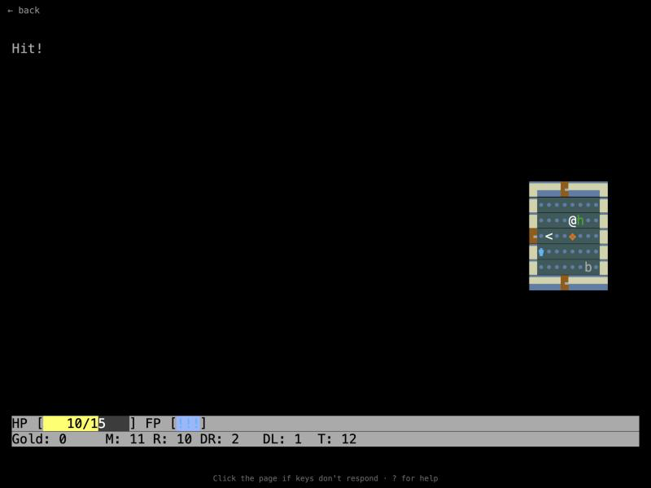
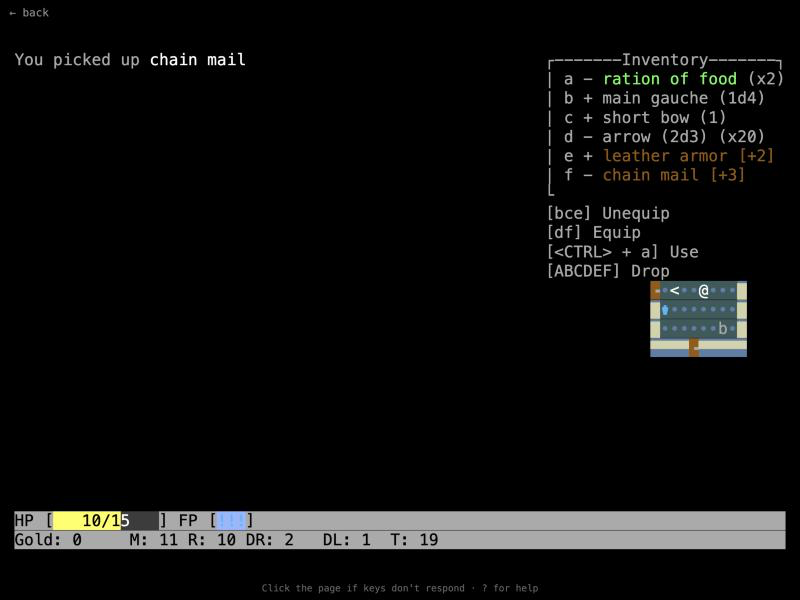

rx1
Completion ▰▰▰▰▰▰▱▱▱▱ 60% · winnable, but Rogue feature list unfinished
rx1 stands for Rogue Variant I. The question behind it was simple: what would I make if the original 1980 Rogue had come out yesterday and I wanted to write my own variant? So it keeps the classic rules (26 dungeon levels, the Amulet, bump-to-attack, unidentified potions, scrolls, rings and wands) and runs in an 80×25 terminal with a 80×23 map.
Then I sanded off the parts of Rogue that annoy me. There's less pure RNG, starving and permanent stat loss are softer (you get a temporary "Weakened" status instead), dark rooms are gone, and fatigue points feed a small tactics menu. On the comfort side you get colors, health bars, smart targeting, running and CP437-style glyphs. Secret doors made way for Brogue-style treasure rooms and zoos.
It was a playground more than a finished game, and a lot of what I learned here later grew into Contractor. The browser version is the real terminal game, rendered into a grid of text. Your name is "Rogue" unless you add ?name=… to the URL, and saves only live until you close the tab.
Features
- 26 generated dungeon levels (Rogue-style grid, accretion and "megadungeon" generators in
dungen/) plus prefab vaults. - The Amulet of Yendor is forced to spawn on level 26, and climbing back out with it wins the game.
- Unidentified potions, scrolls, rings, wands and amulets, all defined in plain
.recdata files. - A GURPS-flavoured rules core: attributes, skills, 3d6 rolls, damage resistance and a critical hit table.
- Fatigue points that pay for a small tactics menu.
- Monster AI, throwing, zapping, running and auto-move, smart targeting and a context menu.
- Colors, health bars, CP437 glyphs and themes, all on an 80×25 terminal.
- A high score table and an ASCII-art win screen.
- 41 monster lore pages and other documents to find and read.
Under the hood
Climbing up without the Amulet makes the dungeon "unstable": each ascent adds 10% to the chance that the stairs crumble and drop you back down, sometimes two levels. From game/state.go:
chance := util.Clamp(0, 0.9, float64(min(10, g.ascensionsWithoutAmulet))/10.0)
return rand.Float64() < chanceThe crit table in rpg/rpg.go was copied in spirit from GURPS, with the gorier results still waiting:
case 7:
damageMultiplier = 1.5 // TODO: inflict major wound/bleeding
case 8:
damageMultiplier = 1.5 // TODO: loss of limb
case 12:
damageMultiplier = 1.5 // TODO: drop equipmentMonsters with a defined 0 HP would despawn the moment they arrive, so game/state.go does this:
actor.charSheet.SetStat(rpg.HitPoints, max(1, def.HitPoints)) // hack to avoid 0 hp actors which would despawn immediatelysources.txt keeps the original Rogue monster table from the PC source as a reference, comments included:
{ "jabberwock", 70, 0, { XX,4000, 15, 6, ___, "2d12/2d4", ___ } },
{ "ur-vile", 0, ISMEAN, { XX,190, 7, -2, ___, "1d3/1d3/1d3/4d6", ___ } },Ideas & inspirations
The text files make the influences obvious. history.txt is a timeline from Rogue 1980 through Hack, Moria, Super Rogue and XRogue, and sources.txt points at the roguepc source on GitHub. ideas.txt lists the interactions of "Grog" and Moria, with a plan to boil all of quaff/read/eat/zap down to one "USE ITEM" key. It also lists what's wrong with Rogue: "Too much RNG", "Starving is too harsh", "Dark rooms are way too annoying" and "Gold is useless", with ideas to throw gold at monsters or spend it in shops.
skills.txt asks "How to apply GURPS?" and plans maneuvers you unlock one by one, plus armor that costs dodge instead of real encumbrance. mechanics_master_list.txt lists the Rogue monster abilities to rebuild (mimics, rust, gold and item theft, confusion). The TODO in design_goal.txt dreams of "Level Challenges from the Gods" (don't use scrolls, don't kill anyone) and Warrior/Adventurer modes, and on balance it just says "Fuck balance - Do what feels right for the dungeon". The lore idea links to the NetHack wiki.
Where it started, where it ended
The first commit (2024-04-07) was already big: 178 files, around 26,000 lines, so the real start happened before git. The early goal in design_goal.txt was "a minimal UI Layer for roguelikes" with 2-bit monochrome and at most 26 items. Two snapshot commits followed, "before experiments" and "before doing wild stuff" (2024-04-28), and that's where it stopped. It became a full colored Rogue variant with a GURPS-style rules engine on top. The 2026 commits only make it build again, run in the browser, and add the lore documents.
State of the repo
Last real work was April 2024. It builds for desktop and WebAssembly. The TODO still has two bugs (equipment stat bonuses aren't shown anywhere, and Blindness never wears off) and open items for saving/loading, level persistence, traps, monster abilities, the full food clock and the full ID game. The source has 10 TODOs, mostly unfinished crit effects and small animation notes. The win condition is marked "GOOD ENOUGH". I'd say it's about 60% of the way to "a complete modern Rogue": the loop is there, a good chunk of Rogue's rules isn't.
Is it a real game?
Playable roguelike. Yes, mostly. You can die (game over with a high score), and you can win by bringing the Amulet up from level 26 to the win screen. That means 26 levels down and the whole way back up, so there's plenty to play. Expect missing pieces though: no saving, no traps, unbalanced spawns, and some status effects that misbehave.
Screenshots



Latest updates
- 2026-10-01 Playable in the browser
- 2026-10-01 Builds again after code.rocketnine.space went away
- 2024-04-28 Snapshot before doing wild stuff
- 2024-04-16 Snapshot before experiments
- 2024-04-07 First commit